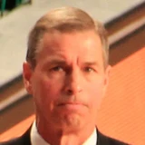

Mark Berman:Mike D'Antoni on Jeff Bzdelik retiring:
“Jeff was obviously a big asset, great to work with. So I wish him the best.”

5 quotes about Jeff Bzdelik from 1 player, coach or executive, newest first. Each one links to its original source.
Mark Berman:Mike D'Antoni on Jeff Bzdelik retiring:
“Jeff was obviously a big asset, great to work with. So I wish him the best.”
Mark Berman:Mike D'Antoni on Jeff Bzdelik no longer on the coaching staff:
“I thought Jeff and everybody under him did a great job.. You'd have to ask (GM) Daryl (Morey) about the reasoningand all that behind it, but there are some great coaches out there.”
Mark Berman:Mike D'Antoni on how Jeff Bzdelik retiring changes roles within his staff:
“Roy (Rogers)will obviously take a bigger role&we brought Matt Brase on to help out,to try to ease some of the burden on Jeff. We'll have the same number of coaches doing the same thing&we'll go from there”
Mark Berman:Mike D'Antoni on Jeff Bzdelik no longer on the coaching staff:
“I thought Jeff and everybody under him did a great job.. You'd have to ask (GM) Daryl (Morey) about the reasoningand all that behind it, but there are some great coaches out there.”
Mark Berman:#Rockets coach Mike D'Antoni on Jeff Bzdelik retiring with the season around the corner:
“It's not ideal. We've got a good organization in place. The information is going to flow like it did before.”
Mark Berman:Mike D'Antoni on Jeff Bzdelik retiring:
“Jeff was obviously a big asset, great to work with. So I wish him the best.”
Mark Berman:Mike D'Antoni on how Jeff Bzdelik retiring changes roles within his staff:
“Roy (Rogers)will obviously take a bigger role&we brought Matt Brase on to help out,to try to ease some of the burden on Jeff. We'll have the same number of coaches doing the same thing&we'll go from there”
Mike D'Antoni on #Rockets associate head coach Jeff Bzdelik who has yet to be interviewed this year by NBA teams looking for a head coach:
“They're missing the boat, because he's done an unbelievable job defensively here... For selfish reasons, I'm happy that he's here.”